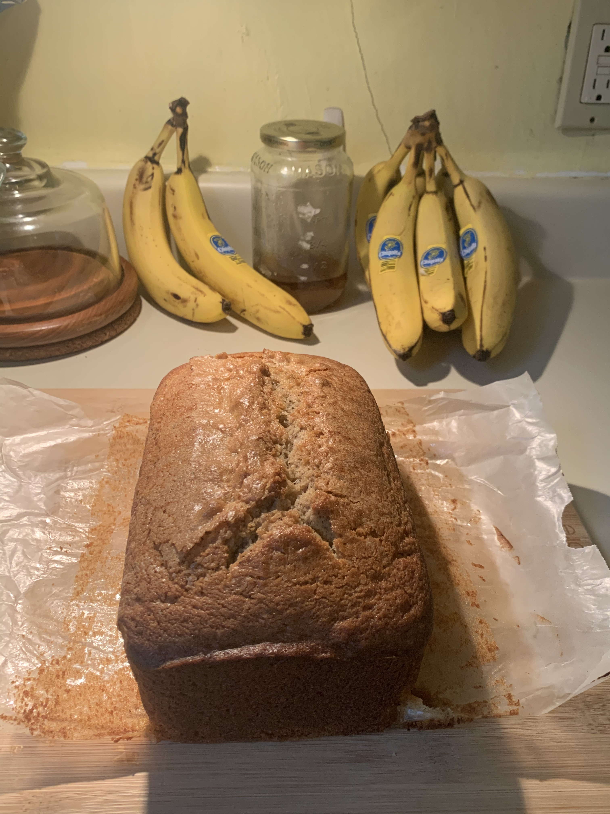

Kaitlyn's Banana Bread

Kaitlyn came up with this recipe and the two of us have been tinckering with the exact
measurements ever since.
We've made it in a cast iron pan, loaf pan, and muffin tins which do vary slightly.
Ingredients
- 3-5 ripe bananas
- 2 eggs
- 1 3/4 cups flour
- 1 tsp baking soda
- 3/4 cups brown sugar
- 3/4 cups white
- 1/4 cup yogurt
- 1/2 cup butter
- 1-2 tsp vanilla
- 1-2 cups chocolate
- cinnamon
- nutmeg
- cloves
- sometimes 1/2 cups walnuts
- sometimes 1-2 tbsp honey
Steps
- preheat oven to 325-350
- pop the butter into the desired baking vessel and put into the oven to soften
but don't leave forget about it doesn't need to melt
just soften and then grease the pan a bit
(maybe sprinkle a little sugar on the greased pan for a little sugary crust?)
- So in largest bowl I do flour/baking soda/cinnamon/nutmeg/cloves.
- Then once I get that how I like I do wets.
I mix the sugars w melted-ish/softened butter and mix til smooth.
- Then in a separate bowl I add bananas
(don’t mush too much cause you’ll mush them more in other steps)
and beaten eggs (beaten in separate bowl)
- then add vanilla then once mixed add yogurt.
- then combine banana mix and sugar/butter mixture.
- Then pour wets into the dry bowl and mix slowly and not too much
(not w a whisk cause it makes it too fluffy)
just mix til it’s completely combined like no dry bits yk
- then add in the choc chips or walnuts and fold it in just enough
- (don’t mix too much cause something about it having too much air
makes it come out not as good)
- pour the mixture into the baking vessel
- then wed sprinkle the white sugar/brown sugar on top before putting it in the oven
- or you could also save a little of the butter sugar mixture to put on top here
to make a different kind of buttery crust